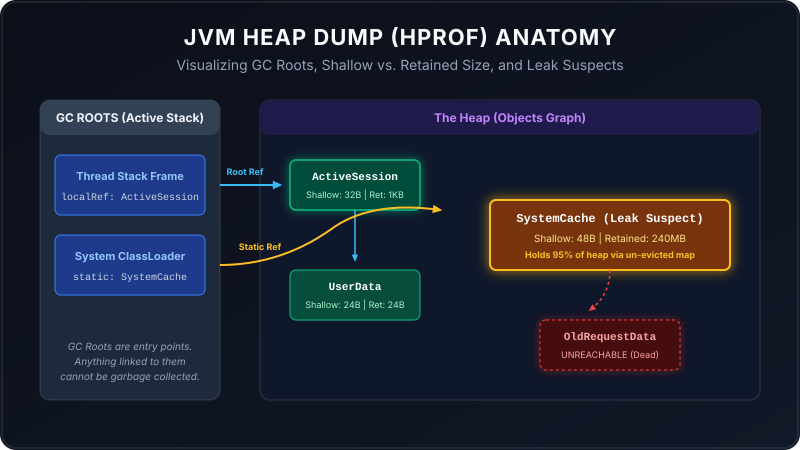

Imagine your Java application is a busy restaurant kitchen. Ingredients are arriving, chefs are cooking, and plates are going out to tables. But slowly, the kitchen runs out of workspace. Plates of half-eaten food are stacking up, and eventually, the entire operation grinds to a halt with an OutOfMemoryError. If you want to know why this happened, you need to take a snapshot of the kitchen at that exact moment. In the Java world, that snapshot is a Heap Dump, stored as an HPROF file.
In this guide, we will break down what an HPROF file is, how to read it without getting lost in the binary weeds, and how to spot common memory issues using simple, real-world analogies.

If looking at application logs or metrics is like watching a live security camera feed of a warehouse, taking a heap dump is like stopping time, freezing all the workers, and writing down an exhaustive inventory list of every single box, its weight, where it sits, and who owns it. The HPROF (.hprof) file is the resulting inventory catalog sheet.
What Does the HPROF File Actually Contain?
Because there could be millions of objects in a Java program, storing this inventory sheet as plain text would produce massive files. That's why the HPROF file is saved in a compressed binary format. Inside it, you will find:
- Every Active Object: Its class type (e.g., String, HashMap, custom User class), its location in memory (address), and the values of its fields.
- All Loaded Classes: The template rules used to build those objects.
- Thread Stacks (GC Roots): The active execution lines. Think of these as "anchors" holding onto items. If an item is anchored, the Garbage Collector cannot sweep it away.
Understanding the Key Metrics
When you open a heap dump in a tool like Eclipse Memory Analyzer (MAT), you will immediately see two metrics for every object. Understanding the difference between them is the key to finding memory leaks.
1. Shallow Size
The empty backpack weight. This is the memory consumed by the object itself (typically its headers and placeholder variable slots). It does not include the weight of items inside the backpack.
2. Retained Size
The total backpack package weight. This is the memory that would be freed if this object were garbage collected. It includes the object's shallow size plus everything it holds that is exclusively reachable through it.
The Exclusive Rule: If you discard a backpack, you also discard the sandwich inside it—so the sandwich's weight counts towards the backpack's Retained Size. But if someone else is holding a string tied to the sandwich, discarding the backpack won't free the sandwich. Therefore, the sandwich's weight does not count towards that backpack's retained size.
How to Analyze the HPROF File (Step-by-Step)
Step A: Run the Auto-Detective (Leak Suspects)
Open Eclipse MAT and load your `.hprof` file. MAT will ask you if you want to run the Leak Suspects Report. Always say yes. MAT automatically looks for objects whose retained size is disproportionately large (e.g., one class holding 80% of the entire heap) and prints a pie chart highlighting the suspect.
Step B: Check the Dominator Tree
If the auto-report doesn't give you a clear answer, open the Dominator Tree view. This lists all objects sorted by their Retained Size in descending order. It works like a corporate hierarchy chart: the object at the top dominates (holds references to) all the objects underneath it.
Step C: Trace the "Path to GC Roots"
Once you find a suspect object that is taking up too much memory, right-click it and choose Path to GC Roots ➔ exclude all phantom/weak/soft references. This traces the reference chain back to the active thread or static variable holding onto the object. Your bug lies where this reference chain intersects with your custom code.
Common Production Pitfalls & Memory Concerns
Most Java memory issues boil down to three common patterns. Here is how to recognize and fix them:
1. The "Receipt Drawer" (Static Collection Leak)
The Code Pattern: An object keeps storing entries in a static map or list, but never deletes old records.
public class TransactionRegistry {
// This collection lives forever because it is static
private static final Map cache = new HashMap<>();
public static void register(Transaction tx) {
cache.put(tx.getId(), tx); // We add, but never call cache.remove()!
}
} How it looks in HPROF: A single java.util.HashMap object with a massive Retained Size, holding millions of HashMap$Node instances.
The Fix: Use a bounded cache with eviction policies (e.g. Caffeine or Guava Cache) or use weak references so the JVM can reclaim elements when memory is tight.
2. The "Dirty Towel" (ThreadLocal Leak)
The Code Pattern: Storing variables in a ThreadLocal container but failing to clean them up when a request finishes.
public class UserContextFilter implements Filter {
private static final ThreadLocal context = new ThreadLocal<>();
public void doFilter(ServletRequest req, ServletResponse res, FilterChain chain) {
context.set(new UserContext(req)); // Set variable on thread
chain.doFilter(req, res);
// PITFALL: Missing context.remove()!
}
} How it looks in HPROF: Expand the application server threads (e.g., Tomcat HTTP threads) in the dominator tree. You will see java.lang.ThreadLocal$ThreadLocalMap taking up megabytes of memory for each thread.
The Fix: Always clear the thread local reference in a finally block:
try {
context.set(new UserContext(req));
chain.doFilter(req, res);
} finally {
context.remove(); // Clean up!
}3. The "Encyclopedia Fetch" (Oversized Query Leak)
The Code Pattern: Querying the database for all records at once instead of paginating results.
// Querying 1,000,000 rows into memory
List products = productRepository.findAll(); How it looks in HPROF: You will see a thread stack frame holding a massive list of database row representations (e.g., byte[][] or Object[] rows inside a JDBC driver instance).
The Fix: Implement database-level pagination using Limit/Offset, or stream results using database cursors rather than loading the entire collection into the heap at once.
Summary Checklist
| Metric / Symptom | What it Means | layman analogy |
|---|---|---|
| Shallow Size | Memory of the container itself | An empty box weight |
| Retained Size | Container + exclusive contents memory | Box + exclusive items inside weight |
| GC Root | Live thread or static reference | Anchor rope to the cliff top |
| Dominator Tree | Object hierarchy sorted by memory weight | Organizational chart of space hoggers |